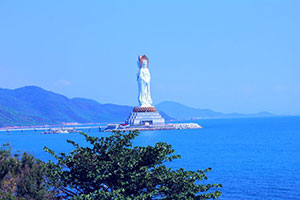

中文名称：三亚
外文名称：Sanya
下辖地区：吉阳区、崖州区、天涯区、海棠区
政府驻地：三亚市吉阳区新风街257号
城市名片：美丽三亚、浪漫天涯
邮政区码：572000
地理位置：海南岛南端[
面 积：1919.58平方公里

作者介绍
三亚市地处海南岛最南端，位于北纬18°09′34″——18°37′27″、东经108°56′30″——109°48′28″之间。东邻陵水县，北依保亭县，西毗乐东县，南临南海。
地形
三亚北靠高山，南临大海，地势自北向南逐渐倾斜，形成一个狭长状的多角形。境内海岸线长258.65公里，有大小港湾19个。主要港口有三亚港、榆林港、南山港、铁炉港、六道港等。主要海湾有三亚湾、海棠湾、亚龙湾、崖州湾、大东海湾、月亮湾等。有大小岛屿40个，主要岛屿10个。
三亚拥有两百万平方公里的南海，自己的海岸线长度是209公里，管辖的海域面积5000平方公里，拥有土地面积是1919.6平方公里。
三亚市区三面环山，北有抱坡岭，东有大会岭、虎豹岭和海拔393米的高岭(狗岭)，南有南边岭，形成环抱之势，山岭绵延起伏、层次分明；同时，山脉的延伸将市区分成若干青山围成的空间，为城市不同地区提供了各具特色的空间景观环境。三亚面临南海，海湾较多，众多海湾各有佳景。处于市区的大东海、小东海、三亚湾与市民生活的关系最为密切。
三亚市区坐落在一种幽美的以山、海、河为特点的自然环境之中，城市的建设注意城市与自然景观环境、生态环境的协调关系，“山—海—河—城”巧妙组合，浑然一体，构成了三亚市区独特的环境特色。